Gaia-AI
Terrenos que nunca existieron, dibujados por una IA
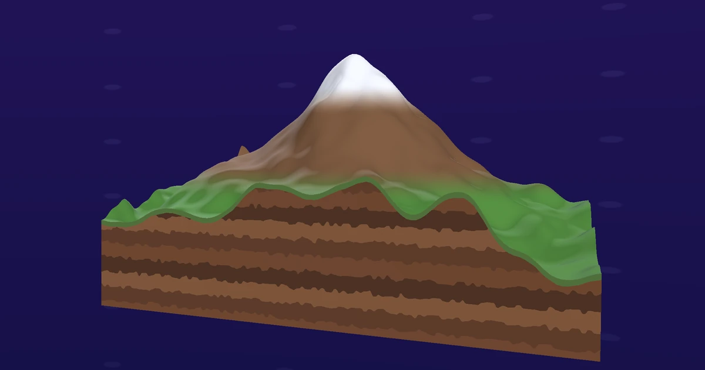
El problema
Los juegos necesitan terreno nuevo. El ruido clásico da variedad, pero no permite pedir una forma. Gaia-AI genera relieve por tipo: llanura, lomas, valle, montaña, meseta y volcán.
Gaia-AI nació al querer crear los mapas de un videojuego propio.
Cómo funciona
-
1 Datos
Reunimos 60 zonas reales del mundo, de unos 11 km cada una, con datos de elevación de la NASA (SRTM, una misión que midió la altura de la superficie terrestre). Cada zona se clasificó en uno de 6 tipos de terreno.
-
2 Procesado
Cada zona se reduce a 120 × 120 puntos y se multiplica por 6 con volteos y rotaciones, para que la IA tenga más ejemplos de los que realmente existen.
-
3 Modelo
Usamos una GAN condicional: dos redes que compiten. El generador crea mapas y el discriminador decide si parecen reales. Las dos reciben el tipo de terreno, así se puede pedir una forma concreta.
-
4 Entrenamiento
500 épocas (vueltas completas por los datos) en CPU, sin tarjeta gráfica. Se eligió el modelo de la época 150 por criterio visual, comparando los mapas a simple vista.
-
5 Visor
El terreno se genera al momento y se explora en 3D en un visor hecho en Godot, un motor de videojuegos.
- 60 tiles SRTM
- 6 clases de terreno
- 500 épocas en CPU
- 150 época elegida
Galería
-
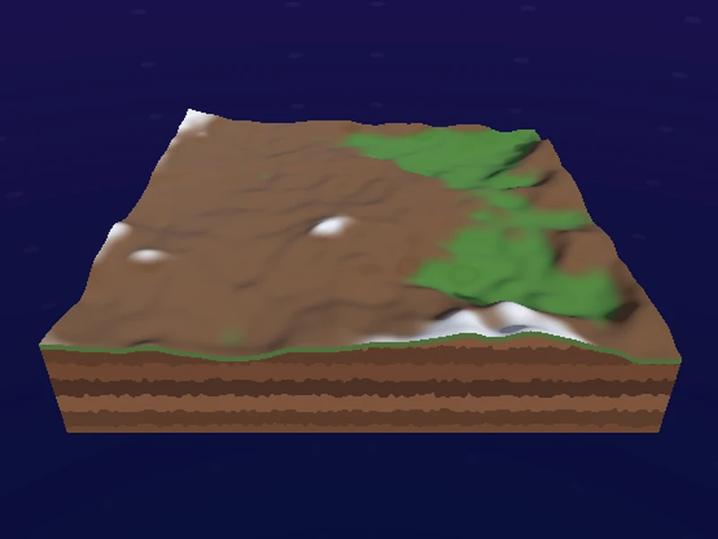
Llanura
Superficie casi plana, sin crestas ni drenaje marcado.
-
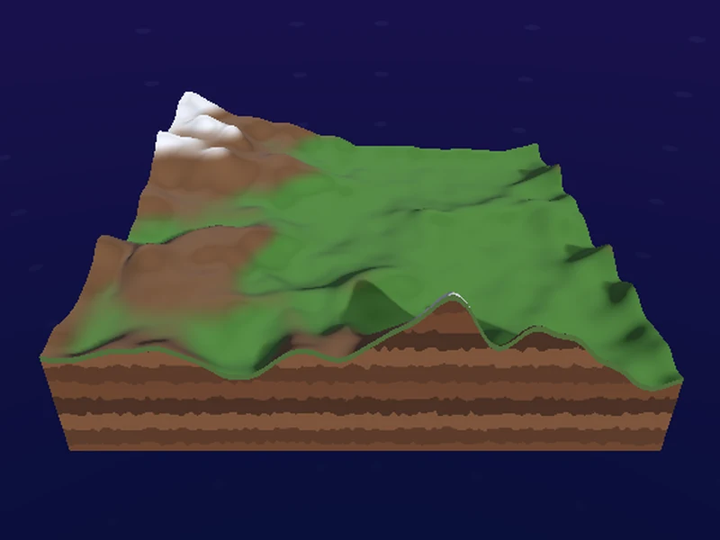
Lomas
Ondulaciones suaves y repartidas, con drenaje visible.
-
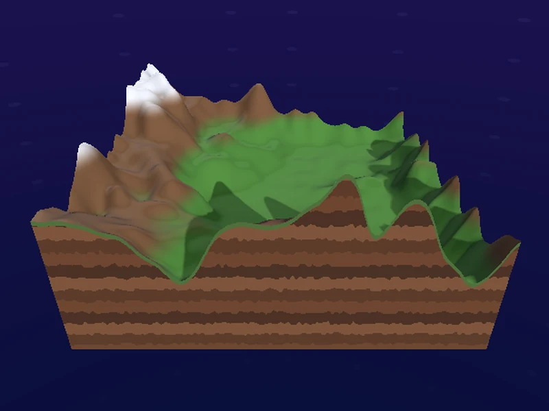
Valle
Fondo bajo con laderas altas a los lados.
-
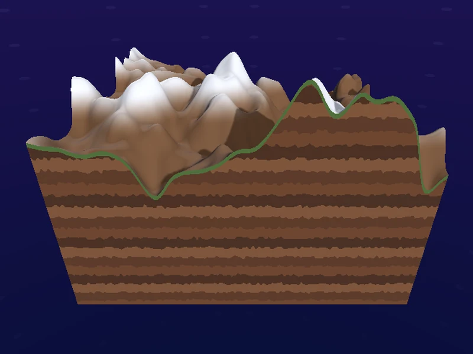
Montaña
Crestas y pendientes pronunciadas, relieve alto y accidentado.
-
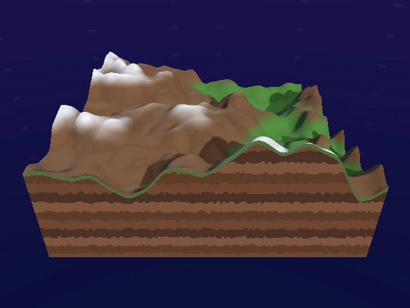
Meseta
Superficie alta y plana con bordes abruptos.
-
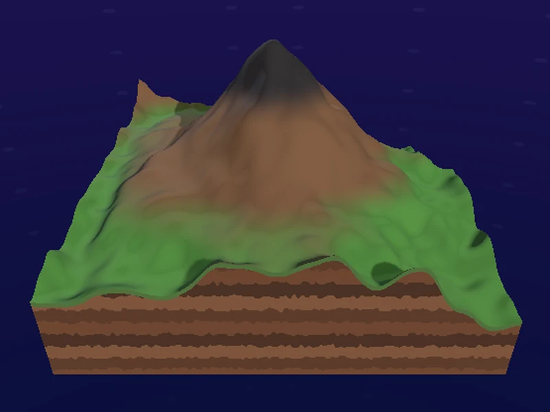
Volcán
Un cono. Por ahora sin cráter; mira la comparación en Cráteres.
Capturas del visor con el modelo de la época 150, semilla 42 y suavizado 2.
Cráteres
Tres volcanes reales del dataset y uno generado por la IA.
-
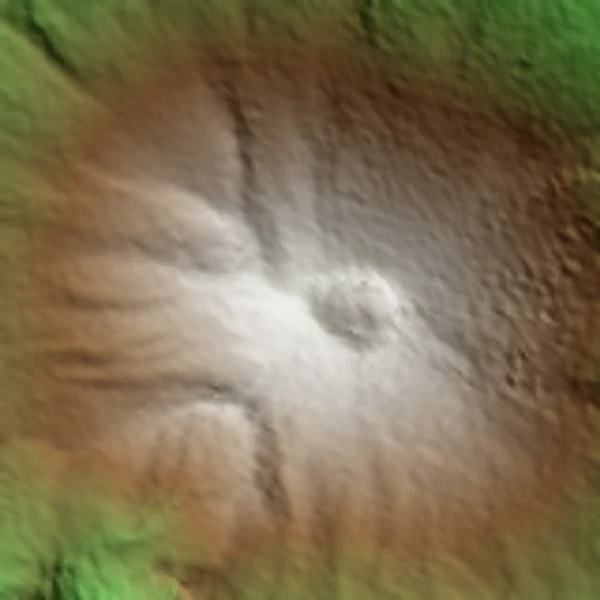
Real Nevado de Toluca
-
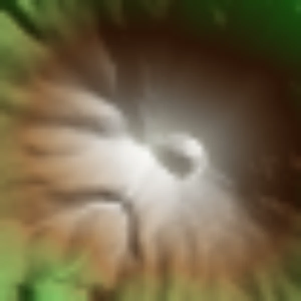
Real El Pinacate
-
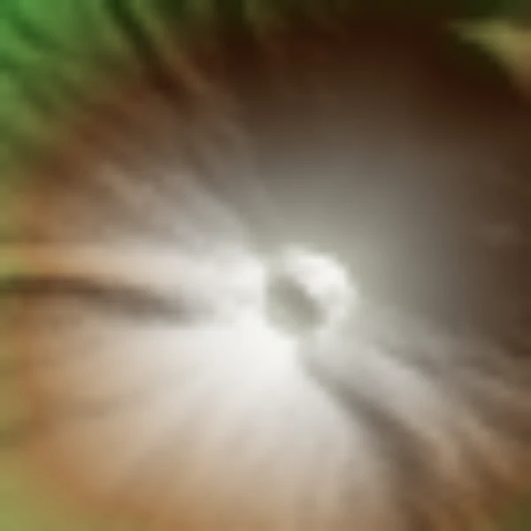
Real Colima
-
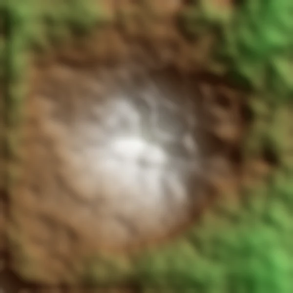
Generado Gaia-AI
Límite actual: los volcanes generados salen como cono sin cráter; solo 3 de 9 volcanes reales del dataset lo tienen.
Resultados
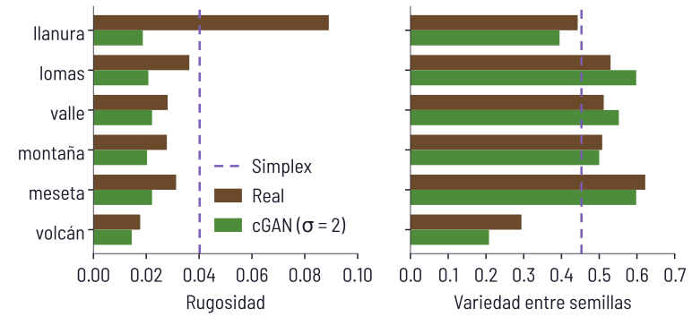
En variedad no hay ganador: Simplex y cGAN caen en el rango real. La cGAN controla la forma; el Simplex no recibe clase.
Interfaz
Se elige forma, semilla y suavizado, y el terreno se genera al momento. Cámara con WASD o mouse; zoom con la rueda.
-
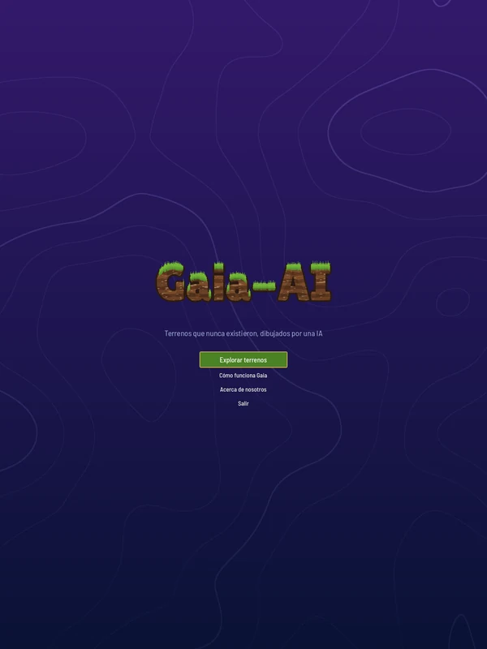
Menú
-
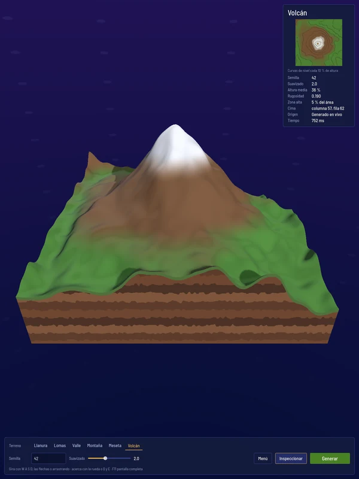
Panel
-
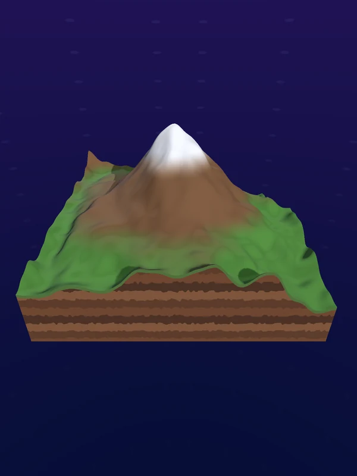
Volcán
Descarga y repositorio
-
Repositorio
Código, modelo y documentación, con licencia MIT.
Ver en GitHub -
Instalador para Windows
Próximamente
-
Beta de Android
Próximamente
Trabajo futuro
Versión 2.0 con más clases (cañón y duna), tamaños de 64 a 2048 px y exportación a otros formatos.